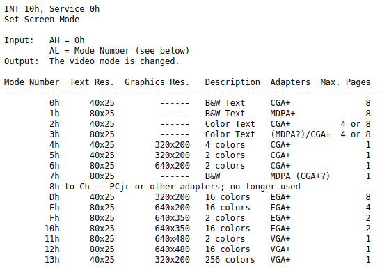

What
What we are trying to achieve
Up until now we’ve
- compiled a i686-elf cross-compiler,
- built a simple bootloader and kernel,
- wrote text on screen and received input from the keyboard,
- and implemented persistant storage to a FAT32 storage device by the IDE-Controller
With that we’re able to boot into our Custom OS, display text and get user input. We’re also able to write files and increment a simple boot counter.
What to expect
This time I’d like to add graphics. We can use a BIOS feature for that. It will give us an area in memory that represents a two-dimensional array representing the pixels of the screen. We can then easily write values to it in order to display graphics on the screen.
With that we can then set up a graphics library to display buttons and react to mouse input. I’ve done something very similar when writing to a raw graphics buffers in WebAssembly (see WebAssembly Particle Simulation user interface )
Setting up that graphics buffer is actually surprisingly easy.
When
How to go about setting up graphics was actually one of the first things I had researched when I started this project. It seemed like the most difficult part as I was under the assumption we’d need proprietary display drivers.
As it turns out we don’t - at least for low-resolution graphics.
Why
With graphics we can write basic graphical user interfaces, we will be able to display images and also write coloured text.
It does come at the expense of not being able to directly write text to a buffer, but having to render a text graphically by using a font. It isn’t particularly difficult to write a function that does this for us automatically.
Background
BIOS Mode 13h
Simple graphics are easily achieved with a BIOS feature. Most BIOS today, next to pure text-based mode, also support “standard graphics modes” or “Mode 13h”.
What Mode 13h does for us is to make a region of memory availble that represents a raw graphics buffer that we can write to.
If you’ve ever noticed how, during boot of a Linux without UEFI, it first displays corse grained black and white text and the suddenly switches to colourful text on boot - that is the point where the system switches from pure text-based to low-resolution, usually 640x480 pixel Mode 13h. Later during boot Linux will load the real graphics driver and display higher quality graphics.

(Screenshot taken from [1])
There is an excellent description of the Bios Mode 13h and Set Mode 10h at [1].
How
Implementation
Luckily I didn’t have to implement the BIOS Mode 13h code entirely myself. Instead I found some code, “graphics.asm”, on an Online Forum “Protected Mode BIOS Call Functionailty v2.0 - by Napalm” (see [2]). Due to its simplicity it is being used across many other Custom OSes.
Assembly Code
In order to use it we need to extend our Makefile:
By extending the object we want to link
OBJ := boot.o printf.o kernel.o fatfs/fatfs_ff.o fatfs/fatfs_ffunicode.o graphics/graphics.o
and adding a rule to compile “graphics.asm”
graphics/graphics.o: graphics/graphics.asm
${AS} -felf32 -i graphics/ graphics/graphics.asm -o graphics/graphics.o
C Code
To switch to 13h Mode and write data to the graphics buffer we write a simple C function:
#pragma once
typedef struct __attribute__ ((packed)) {
unsigned short di, si, bp, sp, bx, dx, cx, ax;
unsigned short gs, fs, es, ds, eflags;
} regs16_t;
extern void int32(unsigned char intnum, regs16_t *regs);
void graphicsInit() {
int y;
regs16_t regs;
uint16_t screenWidth = 320;
uint16_t screenHeight = 200;
regs.ax = 0x0013;
int32(0x10, ®s);
// -- fill screen in black
memset((char *)0xA0000, 1, (screenHeight*screenWidth));
char * VGA = (char *)0xA0000;
// -- draw color bands
int pos = 0;
for(int y = 0; y < screenHeight/2; y++) {
for(int x = 0; x < screenWidth/2; x++) {
pos = y * screenWidth + x;
VGA[pos] = y % 16;
}
}
// -- wait for key
regs.ax = 0x0000;
int32(0x16, ®s);
// -- switch to 80x25x16 text mode
regs.ax = 0x0003;
int32(0x10, ®s);
}
include
#include "graphics.h"
and then call it from our kernel.c
graphicsInit();
With that we can render the color bands shown in the image above.
Rendering Text
We can now enter graphics mode, but at the expense of not being able to write text to the screen as easily. As we’re now dealing with a graphics buffer we need to “render” text to it - that is take the text string and convert it to an image.
In order to do this there are several options:
- use the full-blown libfreetype to render using virtually any true type font (*.ttf) file
- use the minimalist single header library “stb_truetype.h” to do the same albeit a little less compatible
- or resort to evenly spaced (monospace) fonts, where each letter has the exact same with, pre-render it to an array and use that
For my Custom OS I’ve chosen the latter approach.
Preparing a Font
For the particle simulation I had already written a Python script “font-generator.py” that
- uses the evenly-spaced font “RobotoMono-Medium.ttf”
- renders every single ASCII character between space and tilde (that includes A-Z, a-z and 0-9) to an 8 by 16 pixel, 10pt font size, *.xbm image
- and then combines the images of the characters to a C-Header with each character as an array of the pixels
It yields an 11,2 KB C-Header with the pre-rendered font that we can easily include and use to render fonts.
Write Text
With that we can write a simple function to go over each row/column of the character and colour the pixel, if it’s set in the array.
uint16_t fontWidth(uint8_t fontNo, uint16_t charArrId) {
if(fontNo == 0) return fontRobotoMonoMedium10pt_width[charArrId];
return 0;
}
uint16_t fontHeight(uint8_t fontNo, uint16_t charArrId) {
if(fontNo == 0) return fontRobotoMonoMedium10pt_height[charArrId];
return 0;
}
char * fontBuffer(uint8_t fontNo, uint16_t charArrId) {
if(fontNo == 0) return fontRobotoMonoMedium10pt_buffer[charArrId];
return 0;
}
void graphicsRenderChar(char * graphicsBuffer, uint16_t x, uint16_t y, char charToWrite, uint8_t fontNo) {
uint16_t curx = x;
uint16_t cury = y;
uint16_t charArrId = charToWrite - 33;
uint16_t charPixelCount = fontWidth(fontNo, charArrId) * fontHeight(fontNo, charArrId);
for(uint16_t byteNo = 0; byteNo < charPixelCount / 8; byteNo++) {
char bits = fontBuffer(fontNo, charArrId)[byteNo];
for(int bit = 0; bit < 8; bit++) {
// -- start new row when width is reached
if(curx - x == fontWidth(fontNo, charArrId)) {
cury += 1;
curx = x;
}
// -- draw pixel if bit is set
if(bits & 0x01) {
uint16_t pos = cury * screenWidth + curx;
graphicsBuffer[pos] = 1; // 1=blue
}
// -- shift to next bit
bits = bits >> 1;
// -- advance the row
curx += 1;
}
}
}
Notice we can also support variable width fonts by storing the width of a char in an array.
to spell “Hello” we can simply:
graphicsRenderChar(VGA, 8, 10, 'H', 0);
graphicsRenderChar(VGA, 16, 10, 'e', 0);
graphicsRenderChar(VGA, 24, 10, 'l', 0);
graphicsRenderChar(VGA, 32, 10, 'l', 0);
graphicsRenderChar(VGA, 40, 10, 'o', 0);
Progress
Result
With that we’ve laid the groundwork for displaying images and text with colours in varying fonts.
In the next parts we’ll be setting up a proper shell (directory browsing, reading/writing and executing files) and possibly something simple (like TinyCC) to be able to develop software and thereby extend the Custom OS from inside it.
1] https://atrevida.comprenica.com/atrtut07.html 2] https://forum.osdev.org/viewtopic.php?f=1&t=29805